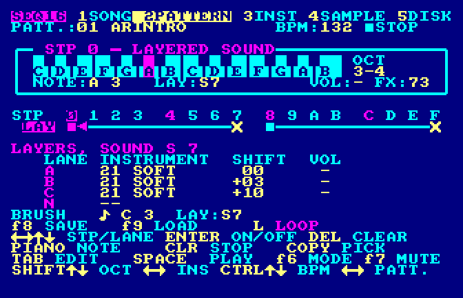
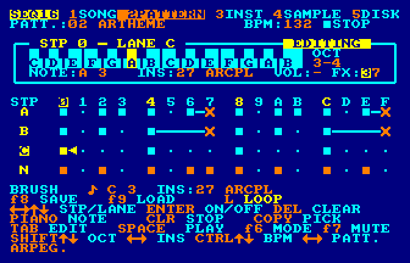
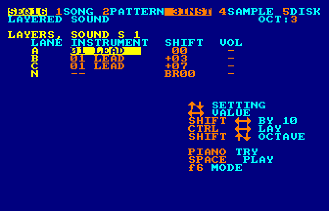
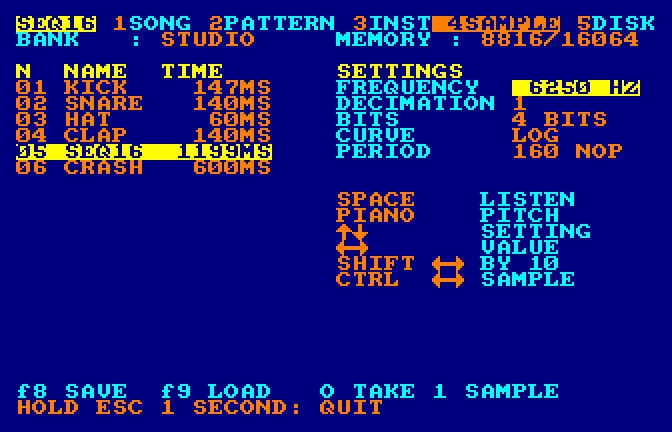
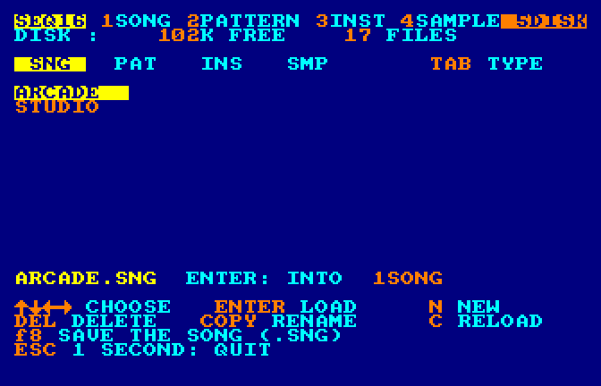
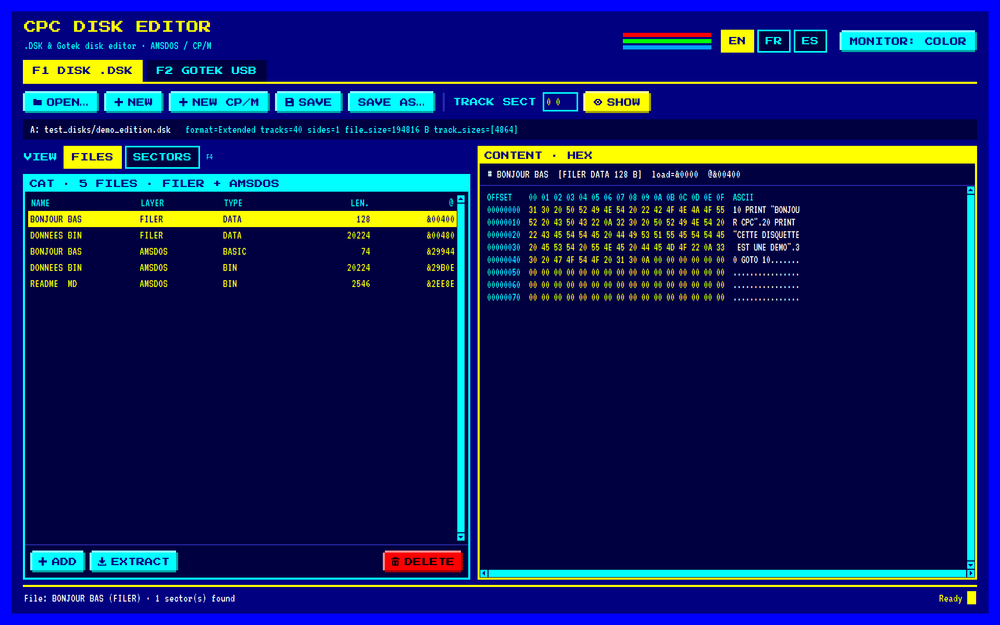
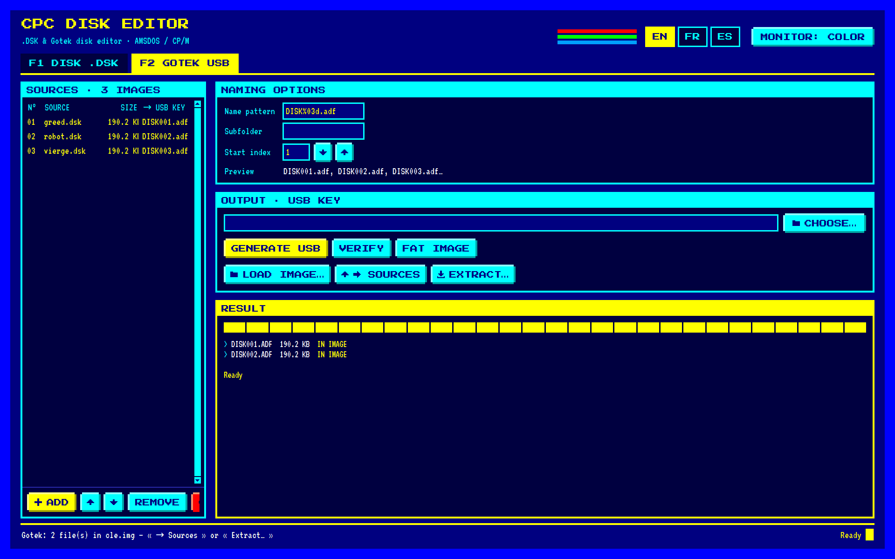
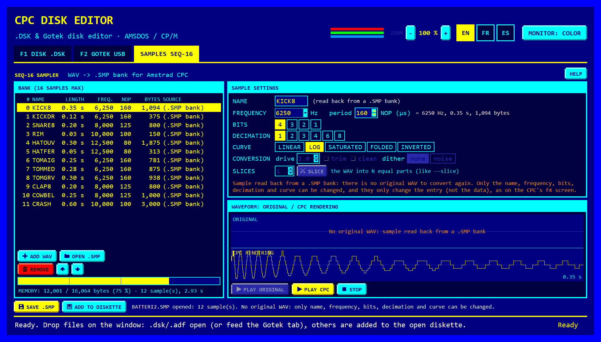

CHIPTUNE SEQUENCER · AMSTRAD CPC 6128
SEQ-16
A 4-voice chiptune sequencer (3 tones + noise) for the Amstrad CPC 6128, written in Z80 assembly.
32 patterns of 16 steps chained into a song (64 positions, repeats, transposition, loop), 32 instruments, 8 layered sounds, 7 per-step effects. And a sampler that plays real recorded sounds on the CPC sound chip, with a grain you can tweak live: the degraded sound is the goal.
Then, on the CPC (set to 6128 in an emulator):
Ready
RUN"SEQ16

Features
Songs
The SONG panel chains the patterns: 64 positions, repeats, transposition, loop, voice mixer.
Patterns
32 patterns of 16 steps on 4 voices (A, B, C and noise N): note, instrument, volume and effect on every step.
7 per-step effects
Up, down, arpeggio, repeat, cut, delay, vibrato: written in hexadecimal as in trackers.
Instruments
32 instruments: live envelope drawing, noise, hardware envelope, arpeggio, vibrato, glissando, portamento.
Layered sounds
A single note plays up to 4 instruments at once; the 8 layered sounds are edited voice by voice.
Sampler
The SAMPLE panel plays recorded sounds (drums, voices…) with adjustable frequency, decimation, bits and curve.
Digidrums
Samples triggered on a step like a note; a .SNG song carries its sample bank.
Banks and patterns
13 instrument banks (416 sounds), 9 sample banks, 125 factory patterns and a demo disk.
Real machine
Runs on a real CPC 6128 (with a Gotek drive) or in an emulator, in English, French or Spanish.
The five panels
Five panels, picked with the function keys on the numeric keypad; in each one, f8 saves and f9 loads.
The screenshots show the English version (seq16-en.dsk), with the ARCADE song from the demo disk.








Download
The program disks are on the latest release page; the demo is in the repository's build/ folder. Each .dsk image is a standard CPC disk.
| Disk | Content |
|---|---|
seq16-en.dsk | SEQ-16 in English, with the 13 instrument banks and the 9 sample banks |
seq16-fr.dsk | SEQ-16 in French (version française), same banks |
seq16-es.dsk | SEQ-16 in Spanish (versión en español), same banks |
seq16-demo-en.dsk | demo: SEQ-16 in English and two songs, ARCADE (layered sound, all 7 effects) and STUDIO (samples, voice); also French and -es |
seq16-inst.dsk | banks only: the 13 .INS instrument banks (without the program) |
seq16-samples.dsk | banks only: the 9 .SMP sample banks (without the program) |
seq16-motifs-mono.dsk | 62 mono factory patterns (layered sound) — PATTERN panel, f9 |
seq16-motifs-poly.dsk | 63 poly factory patterns (split voices) — PATTERN panel, f9 |
Same program, same files, same keys in all three languages: only the screen texts change. With a bank or pattern disk, change disks, then f9 in the matching panel (or the f5 DISK panel).
In an emulator
- Download
seq16-en.dsk. - Put the disk in an emulator (WinAPE, Caprice32, ACE-DL, RetroVirtualMachine…) set to CPC 6128.
- Type
RUN"SEQ16then RETURN.
To quit, hold ESC for one second. A single press is not enough, so you cannot lose your work by mistake.
On a real CPC with a Gotek
Copy seq16-en.dsk to the USB stick of a Gotek drive (FlashFloppy or HxC firmware), then type RUN"SEQ16 on the CPC. The companion tool CPC DISK prepares the Gotek's USB stick.
On PC: CPC DISK
CPC DISK is the companion tool: a .dsk image editor that looks like a CPC screen, in pure Python, with no dependencies. Use it to:
- open
seq16-en.dskand browse its AMSDOS catalog; - get the
.SNGsongs saved on the disk, or add some; - prepare the Gotek's USB stick (FlashFloppy, or a key for the HxC firmware);
- make your own sample banks in its SAMPLES SEQ-16 tab.
Downloads on the CPC DISK release page: a Windows program (cpc-dsk-gui-1.2.0-windows-x64.exe) and a Linux binary.



Your own sample banks from WAV files
The SAMPLES SEQ-16 tab of CPC DISK (in English, French or Spanish) makes a .SMP bank from WAV files, with no command line:
- On the left, the list of samples (16 at most): add WAVs (Ctrl+W, several at once), open an existing
.SMPbank (Ctrl+O), remove, move up, move down. A gauge shows the space used out of the 16,064 bytes of CPC memory; it turns red if the bank is too big. - On the right, the settings of the chosen sample: name (6 characters), frequency, saturation, silence trimming, smoothing, dithering, bits, decimation, curve, slicing. The waveform shows the original at the top and the CPC rendering at the bottom.
- Listen to the original or the CPC rendering.
- Save .SMP (Ctrl+S), then Add to disk: the disk open in the Disk tab is offered directly.
For an opened .SMP bank there's no original WAV any more: you can change the name, frequency, bits, decimation and curve, but not the settings that require reconverting the sound.
Prefer the command line? tools/wav2smp.py (Python 3, standard library only) converts mono or stereo WAVs, 8 or 16 bits, at any sample rate:
python tools\wav2smp.py mavoix.wav --trim --rate 6250 -o samples\MAVOIX.SMP --dskIt also writes a preview WAV, so you can hear the result on the PC before copying the disk. Options and examples are in the README.
For developers
SEQ-16 is written in Z80 assembly and assembled with rasm. On Windows:
- Put
rasm.exeintools\. - Put the CPC DISK project next to this one: SEQ-16 uses its library (
cpc_dsk) to write disks.tools/cpcdisk.pyfinds it by itself (orpip install -e ../CPC-DISK, or theCPC_DISKenvironment variable). - Run
build.bat(Python 3 is needed): it assemblessrc/main.asmand builds the disks in all three languages with every bank, the pattern disks, the test songs and the demo (build\seq16-demo-fr.dsk).tools/snapshots.pyredoes the screenshots,tools/gen_site.pythis website.
_Codes/
├── CPC-SEQ-16/ this project
└── CPC-DISK/ the disk editorTests run the real program in a Z80 simulator:
pip install z80
python -m unittest discover -s tools -p "test_*.py"Translations live in tools/lang.py; python tools/lang.py --check reports forgotten or too-long texts. Everything else (code layout, formats, roadmap) is in the repository README.
Acknowledgements
SEQ-16 and CPC DISK stand on the shoulders of these projects. Thank you!
Tools & libraries
- RASM — Z80 assembler by Édouard Bergé
- z80 — Z80 emulator for Python by Ivan Kosarev (runs the simulated CPC used by the tests)
- Ayumi — AY-3-8912 emulator by Peter Sovietov (MIT); its DAC volume table is used by the sample converter
- eSpeak NG — speech synthesis for the VOIX, CHIFFRES and MOTS sample banks
- Python & tkinter
- PyInstaller — Windows/Linux executables of CPC DISK
- pytest
- dosfstools — fsck.fat / mkfs.fat, reference for the FAT16/FAT32 writers and their tests
- Press Start 2P (CodeMan38), VT323 (Peter Hull) — fonts, SIL Open Font License 1.1
Documentation & references
- CPCWiki — CPC firmware, AY-3-8912, AMSDOS, DSK image format
- HxC2001 — HxC firmware for Gotek, file selector and docs; file selector sources
- FlashFloppy — Gotek firmware
- Design of the FAT file system
- Microsoft SHFormatDrive — Windows Format dialog
Emulators & disks used for testing
- WinAPE
- Internet Archive — real CPC disk images used as test disks in CPC DISK